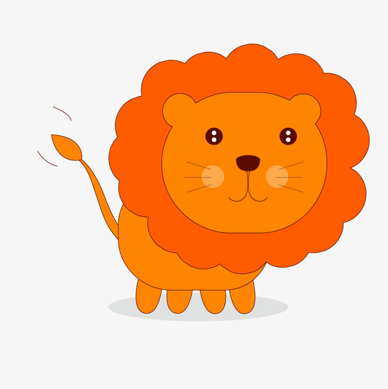

นางสาว พรนภา ชาภู่พวง 16015153
นิทานคติสอนใจ
สิงโตชราตัวหนึ่ง กำลังนอนรอความตายอย่างทุกข์ทรมานจากโรคภัยที่มารุมเร้าอยู่ในถ้ำ บรรดาสัตว์ป่าพากันกันเยี่ยมเยือนเพื่อหวังจะแก้แค้น หมูป่าใช้เขี้ยวแทงสิงโตจนล้มลง จากนั้นวัวก็เข้ามาไล่ขวิด ส่วนลาใช้เท้าดีดไปที่หน้าของสิงโตจนตาบวมปูด สิงโตได้แต่รำพึงกับตัวเองว่า "ข้าต้องโดนสัตว์อ่อนแอพวกนี้ทำร้าย โดยที่ข้าไม่มีแรงตอบโต้แม้แต่น้อย มันช่างน่าเจ็บใจยิ่งกว่าความตายเสียอีก"
นิทานเรืองนี้สอนให้รู้ว่า คนที่เคยใช้อำนาจข่มเหงผู้อื่น หากหมดอำนาจเมื่อใดก็จะไม่มีใครเขาเกรงกลัว
ความรู้เกี่ยวกับสิงโต
สิงโต (Lion) จัดอยู่ในไฟลัมสัตว์มีกระดูกสันหลัง ชั้นสัตว์เลี้ยงลูกด้วยนม อยู่ในวงศ์ Felida ซึ่งเป็นวงศ์เดียวกับแมว สิงโตมีชื่อวิทยาศาสตร์ว่า Panthera leo มีขนาดลำตัวใหญ่ ขนาดไล่เลี่ยกับเสือโคร่งทั่วไป ซึ่งเป็นสัตว์ในสกุล Panthera เหมือนกัน จัดเป็นสัตว์ในวงศ์ Felidae ที่มีขนาดใหญ่ที่สุดรองมาจากเสือโคร่งไซบีเรีย พื้นลำตัวสีน้ำตาล ไม่มีลาย ตัวผู้เมื่อโตเต็มที่จะมีขนสร้อยคอยาว ขนปลายหางเป็นพู่ ชอบอยู่เป็นฝูงตามทุ่งโล่ง มีน้ำหนักประมาณ 250 กิโลกรัม (550 ปอนด์) ตัวเมียมีขนาดเล็กกว่า มักทำหน้าที่ล่าเหยื่อ มีน้ำหนักประมาณ 180 กิโลกรัม (400 ปอนด์) มีถิ่นกำเนิดในทวีปแอฟริกาและประเทศอินเดีย ในป่าธรรมชาติ สิงโตมีอายุขัยประมาณ 10-14 ปี ส่วนสิงโตที่อยู่ในกรงเลี้ยงมีอายุยืนถึง 20 ปี
พฤติกรรม
สิงโตเป็นสัตว์จำพวกแมวที่อยู่เป็นสังคมมากกว่าแมวป่าชนิดอื่นๆ ที่มักอยู่อย่างโดดเดี่ยว สิงโตเป็นสัตว์นักล่าที่มีสังคมสองรูปแบบ รูปแบบแรกเป็นการรวมตัวกันที่เรียกว่า "ฝูง (prides)"[50] ปกติฝูงหนึ่งจะประกอบไปด้วยสิงโตตัวเมียห้าถึงหกตัว ลูกสิงโต และสิงโตตัวผู้หนึ่งถึงสองตัว ซึ่งเป็นคู่ของนางสิงห์ (แม้ว่า จะมีการพบฝูงขนาดใหญ่ที่มีจำนวนสิงโตถึง 30 ตัว) ตัวผู้ในฝูงจะมีไม่เกินสองตัว แต่อาจเพิ่มจำนวนถึง 4 ตัวและลดจำนวนลงเมื่อเวลาผ่านไป ลูกสิงโตตัวผู้จะถูกขับออกจากฝูงเมื่อโตเต็มที่

คำศัพย์
lion = สิงโต
Moral = คติสอนใจ
forest = ป่า
Back to top